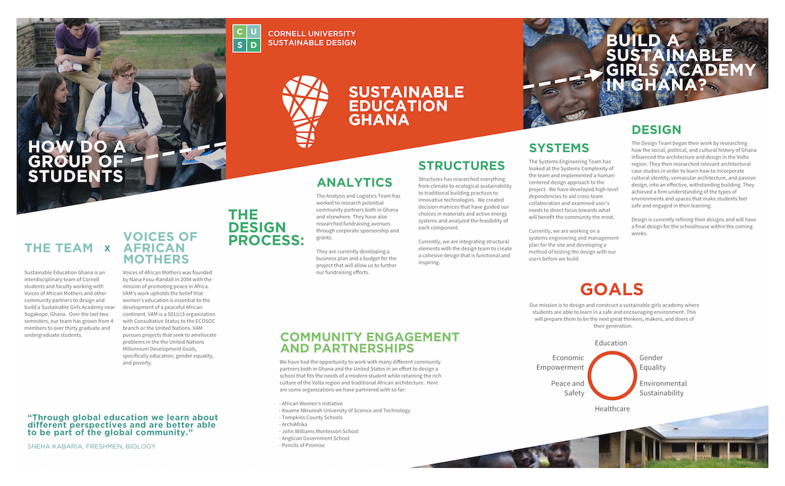
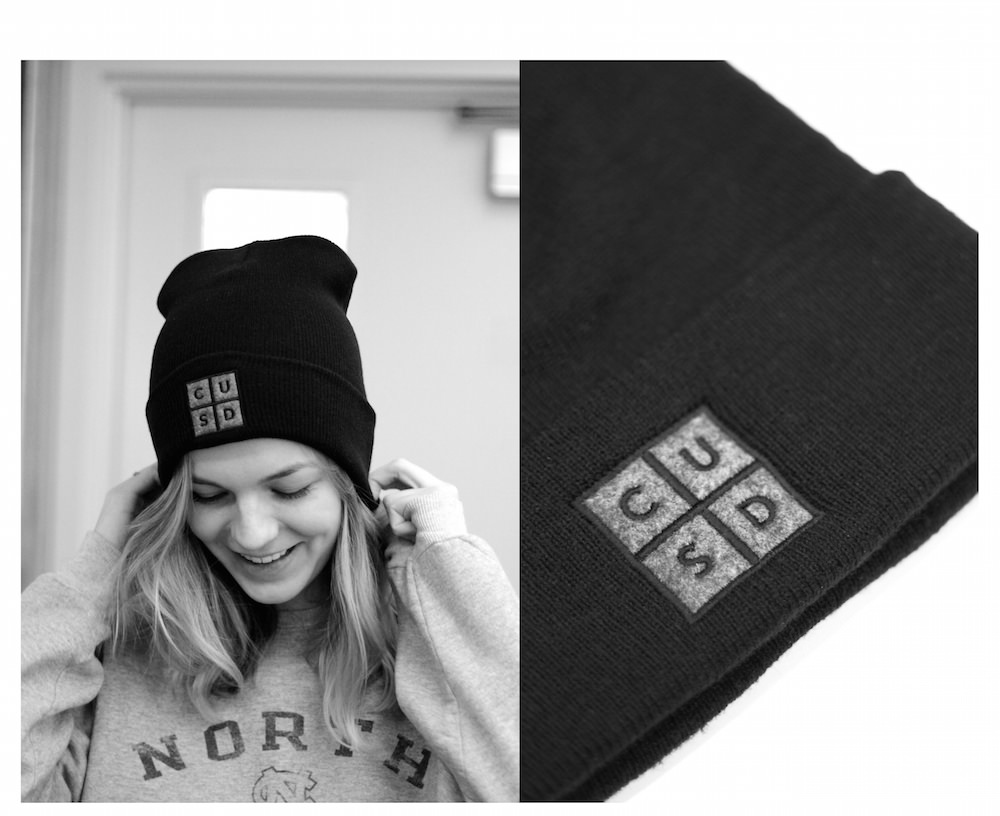
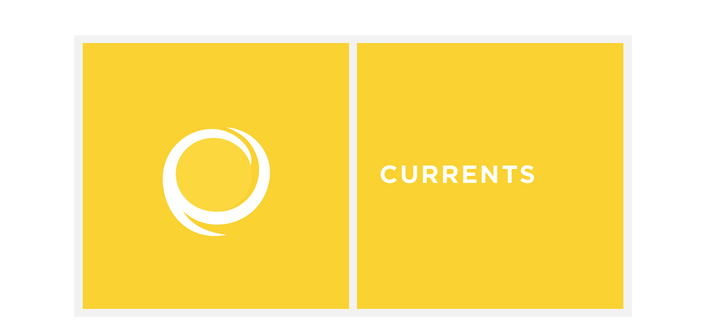
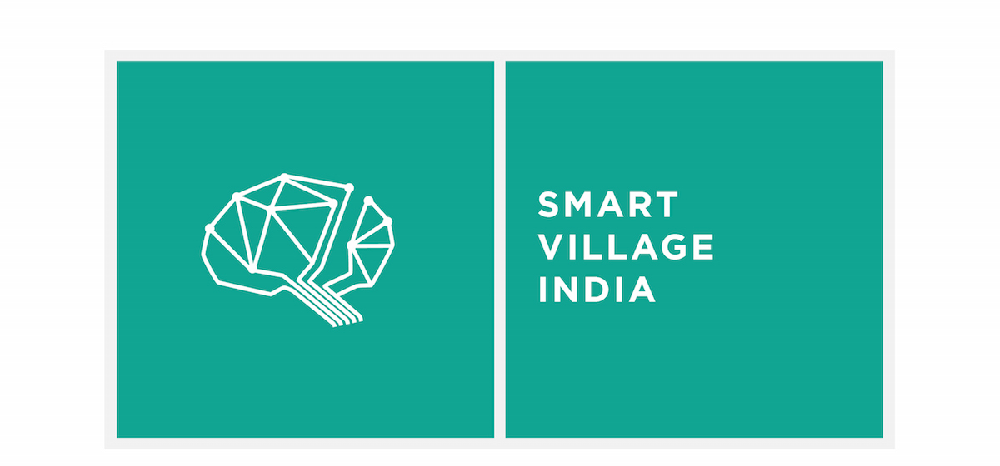
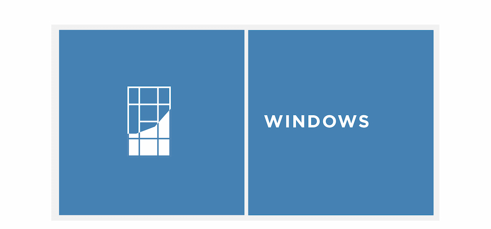

Cornell University Sustainable Design is a a student run, interdisciplinary project team with a bias towards impact. CUSD's current projects range from the design and construction of an educational center for girls in villages outside of Sogakope, Ghana to the design of an amphibian conservation for endangered salamander in the Cornell Plantations. As a member of the TechOps and MarComm teams on CUSD, I have done design work that has real impact on the projects and team as a whole. Below is a sample of some of my designs since the fall of 2015.
I was a lead member in the redesign and development of the CUSD website. I began with user experience flows and visual explorations to the actual development of the website using Middleman and Foundation frameworks
I collaborated with TechOps to design and develop the Cornell Open Data Initiative website which aims to create an open and easily accessible data repository for Cornell University. We used Middleman and Bootstrap frameworks

I created this poster to represent the Ghana project of CUSD for the Community Engagement Showcase, a celebration of outstanding local and global community-engaged projects at Cornell University

I designed and ordered custom beanies with the CUSD logo on felt appliqué behind black embroidery

I designed this logo for the Currents team. The cyclical shape evokes a sense of renewability and flow, words that are at the core of the team's mission

I designed this logo for the Smart Village India team. The team's goal was to design a sustainable water system for a resource-limited village in the Chikkaballpur district of India. The logo represents this mission: the lines represent irrigation lines as well as a brain

I designed this logo for the Windows team. The muntins of the window are arranged in the same configuration as those in Olin Hall, the first building the team analyzed